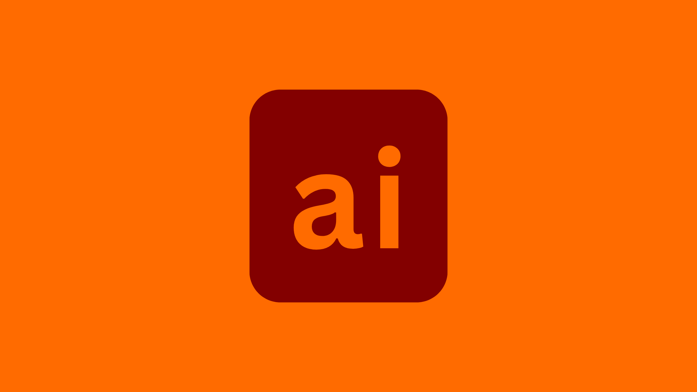

Illustrator
Illustrator is a editing software offered by Adobe. It mostly used for making vector pictures.

Illustrator and Features:
Vector graphics points, lines, traditional protection, and shape-based creative products mean they avoid designs where they are sectored to exact size or spread across the width of a billboard. They are told to express their images through lines, correct designing, and shape. The Pen tool allows for creating and embedding anchor points for designs essential to crafting custom shapes and paths. The Curvature tool is a clean, friendly way to create smooth, laborious lines and complex shapes. Illustrator supports variable weight to precisely customize typography in an easy way so that people can easily understand it and show their experiences.
The Brush Panel offers different types of brushes, linear sector arts, and painterly effects that add textures and styles. Drop shadows are used to add depth and dimension. Global 3D effects and appearances are included so people can easily understand and visualize their projects. The Enhanced Pre-Grade Ding Manual Tool adds shielding and highlights to craft projects by creating a mission that can be customized for smooth realism and preferred shading.
Illustrator Uses:
Illustrator is used in vector graphic powerhouses, press drawing, shape tools, artboards, document setups, creative brushes and effects, designing for UI and web graphics. It is also utilized in 3D tools, development, dimensions, and advanced masking techniques.
Illustrator Download Link:
Download Adobe Illustrator
Release Date:
19 Feb 1990
Updated & Version:
14 Oct 2024 / 29.9
Your Ultimate Guide to Adobe Illustrator: From Beginner to Pro Editor
Adobe Illustrator is a go-to tool for designers, artists, and creatives worldwide. Known for its ability to create scalable vector graphics, it’s used to design everything from logos and illustrations to web graphics and infographics. While it may seem complex at first, with the right approach, anyone can master Illustrator and unlock its full potential.
1. Getting Started with Adobe Illustrator
Starting with Illustrator might feel intimidating, but it’s easier when you take it step by step. Here’s how to get started:
Step 1: Download and Install Illustrator
- Visit Adobe’s website and download Illustrator from the app store. You can start with a free trial or subscribe to one of Adobe’s plans.
- Once installed, open the application and log in with your Adobe ID to create your first project.
Step 2: Familiarize Yourself with the Workspace
Illustrator’s workspace is where all the magic happens. Here’s a quick overview:
- Toolbar (left side): Contains essential tools like the Pen, Selection, and Shape tools.
- Properties Panel (right side): Displays settings for the selected tool or object.
- Artboard (center): Your main canvas where designs come to life.
Step 3: Explore the Basics
Start with simple tools:
- Use the Selection Tool to move or adjust objects.
- Try the Pen Tool for creating paths and shapes.
- Experiment with the Shape Tool to make rectangles, circles, and polygons.
- Add text with the Text Tool and customize it using fonts and colors.
Step 4: Create Your First Project
Open Illustrator and create a new document. Design something simple, like a logo or a custom icon, using basic shapes and colors. Save your work in .AI format (Illustrator’s native file type) and export it as .PNG or .JPG to share.
Step 5: Watch Tutorials
There’s no shortage of resources to help you. Adobe’s tutorials and free guides on YouTube are great places to start. Practice regularly to build confidence with the tools and interface.
2. How to Benefit from Illustrator’s Features
Illustrator is packed with powerful tools that can elevate your designs. Let’s look at some ways you can make the most of it:
- Create Scalable Graphics: Illustrator’s vector-based format ensures that your designs stay sharp, no matter how much you resize them. This makes it ideal for logos, icons, and illustrations.
- Design with Precision:
- Use the Pen Tool and Anchor Points to create smooth paths and shapes.
- Align and distribute objects perfectly with the Align Panel.
- Customize Typography:
- Adjust fonts, spacing, and alignment to suit your design needs.
- Convert text into outlines to create custom lettering and text effects.
- Work with Colors and Gradients:
- Use the Color Guide to find complementary colors or create custom palettes.
- Add depth with the Gradient Tool for smooth color transitions.
- Save Time with Reusable Assets:
- Turn frequently used elements into Symbols for easy reuse.
- Create custom brushes for unique strokes and textures.
- Export for Different Platforms:
- Web: Use .SVG or .PNG for websites and social media.
- Print: Export in .PDF for high-quality print projects
- Animation: Send .AI files to tools like Adobe After Effects to add motion.
- Integrate with Other Adobe Tools: Illustrator works seamlessly with apps like Photoshop and InDesign, allowing you to combine features to create polished projects. For example, you can use Photoshop for photo editing and Illustrator for designing graphics.
3. Becoming a Pro with Illustrator
If you’re ready to take your Illustrator skills to the next level, here’s how you can work towards becoming a professional in this field:
- Learn Advanced Tools and Techniques:
- Blend Tool: Use this to create smooth transitions between objects or colors.
- Mesh Tool: Add realistic shading to objects by manipulating color gradients within shapes.
- Clipping Masks: Use these to crop images or patterns within specific shapes.
- Pathfinder Tool: Combine or divide shapes to create complex designs with ease.
- Find Your Niche: Specializing in a specific area can help you stand out. Popular options include:
- Logo Design: Create unique, scalable logos for businesses.
- Illustrations: Design custom artwork for books, websites, or advertisements.
- UI/UX Design: Develop wireframes and prototypes for apps and websites.
- Build a Portfolio: A strong portfolio showcases your skills and creativity. Include a mix of projects like logos, infographics, and illustrations. Share your portfolio on platforms like Behance, Dribbble, or your own website to attract clients and job opportunities.
- Learn Shortcuts and Plugins:
- Memorize keyboard shortcuts to speed up your workflow.
- Explore plugins like Astute Graphics to add extra functionality to Illustrator.
- Stay Updated and Keep Practicing: Illustrator regularly adds new features. Stay ahead by exploring updates and following design trends. Practice daily, take on freelance projects, and learn from others in design communities.
- Collaborate and Teach: Work with other designers to gain new insights and perspectives. Share your expertise by teaching others through tutorials, workshops, or online content. This not only helps others but also strengthens your own understanding.